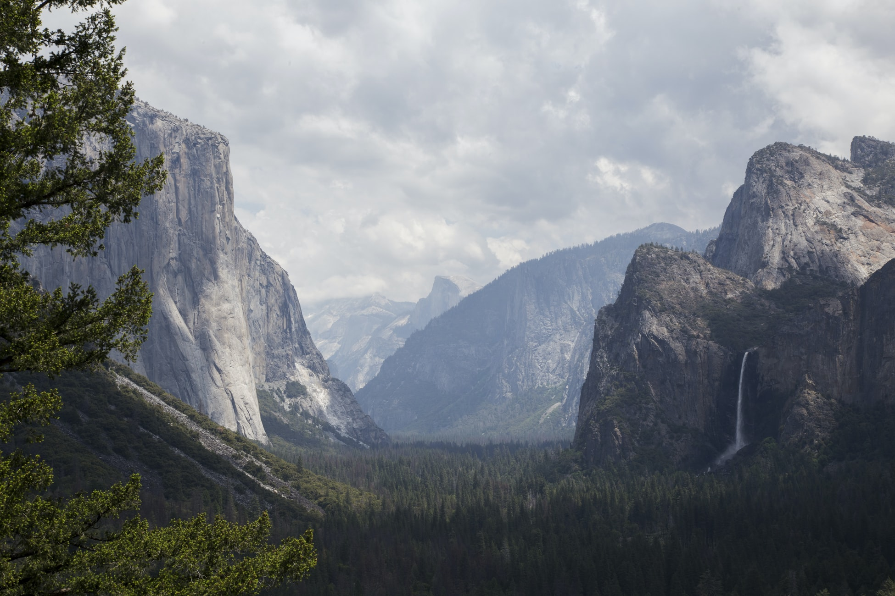

Half Dome is a granite dome at the eastern end of Yosemite Valley in Yosemite National Park, California. It is a well-known rock formation in the park, named for its distinct shape. One side is a sheer face while the other three sides are smooth and round, making it appear like a dome cut in half.
Learn more about half dome!
Here!
Black bears, mule deer, bobcats, mountain lions, foxes, and bighorn sheep are some of the most commonly spotted mammals at Yosemite National Park. There are also more than 250 species of birds, plus a variety of amphibians and reptiles, including three species that can only be found in the Sierra Nevada mountain range.
Learn more about Yosemite wildlife!
Here!

Scroll over the squares to interact with the picture!
Challenge
This labs challenge was to use advanced css to do fancy stuff and things.
Problems
This lab took me longer than usual. I think it was just harder for me to figure out how I wanted to set up the webpage. I did a lot of research on transitions and animations to come up with ideas.
Results
I was able to create the file directory correctly, create divs, link my css file, edit margins and padding, position the photos, applied text-shadow, box-shadow, gradient, filters, animations, and tranformations.
More Information
Yosemite National Park in beautiful Mariposa County welcomes you to experience this majestic park in all four seasons. Explore things to do, such as seeing awe-inspiring vistas, granite icons, breath-taking waterfalls, and discovering fascinating history, all while staying in Yosemite and Mariposa County. Whether it’s your first time visiting Yosemite National Park or you’re a seasoned veteran traveler, you’ll always find something new to do here. Search for events, lodging, dining, directions and more.